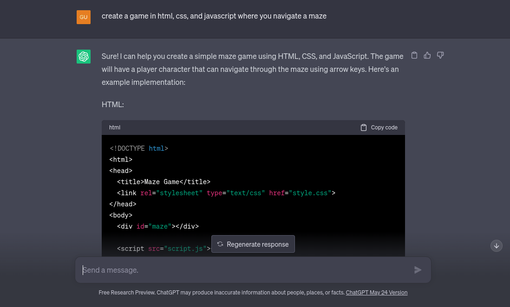
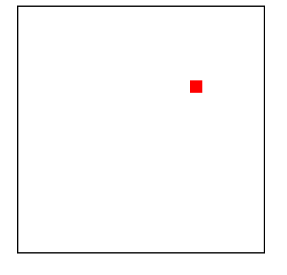
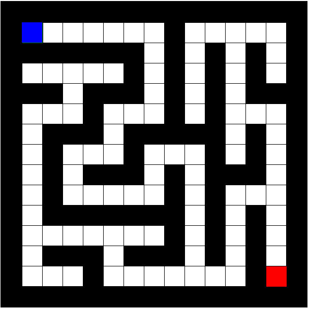

This project was made possible by ChatGPT. Most of the coding was done by ChatGPT, with some prompting on my part.
This project was also inspired somewhat by the creator of sumplete.com, Daniel Tait. I first got the idea of using ChatGPT to make this game from him.
I wanted to make something like a game where there's a maze and you had to navigate through it, and every time you played, it was different.
So I got to work, and began prompting ChatGPT to make a game. At first, I had no idea what I was doing, so my first prompt and response was:
which gave me this:
Just an empty square with a red square that the player can move around. So ChatGPT and I had a long way to go.
The full version history is on display at this link, but after multiple prompting and retries (after hours), this is the result:
This was the first version of the smaller randomly generated maze that worked properly. After this milestone, I proceeded to add an expanded maze, and added titles, timers, and the end screens.
At one point, the chat file had gotten too big that my computer was getting noticeably getting slower, so I had to open up a fresh chat and continue coding.
After a very long week, we had finally landed on version 1.0 of The Traze Maze!
Big thanks to ChatGPT for coding this game, and thanks to you for playing this game and reading this article!
Any questions or comments, email me at swiftbulldozer@gmail.com, or fill out this feedback form: Voice Your Thoughts!.
Please note that this game is still under development and that these articles are subject to change without warning.
By continuing to browse and play on our website, you agree not to sue, attack, or in any way harm the physical and mental well-being of the creator and maintainer of this website. ©Tim Tran 2023